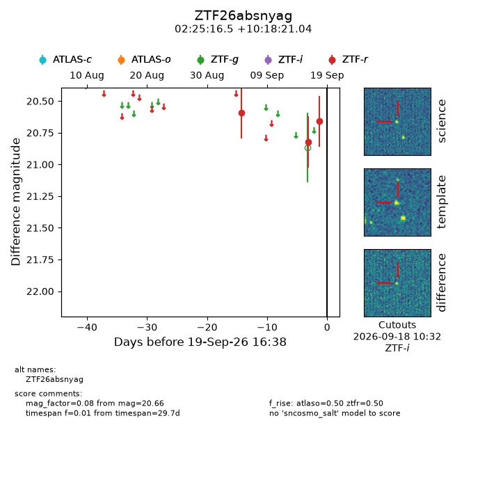
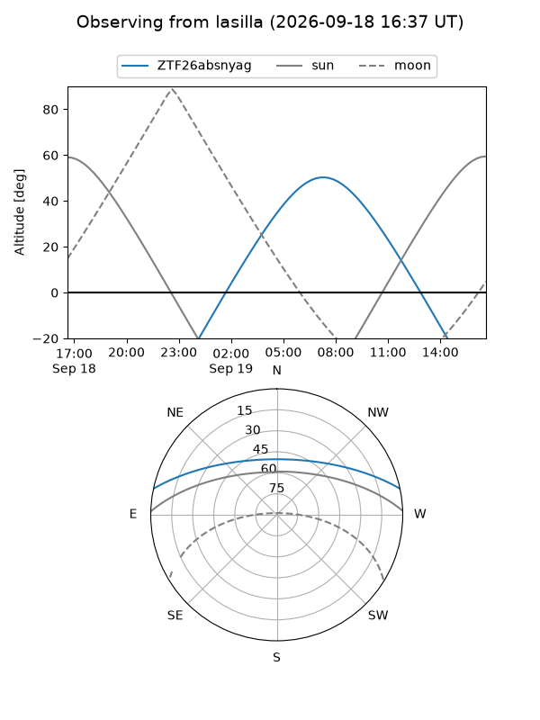
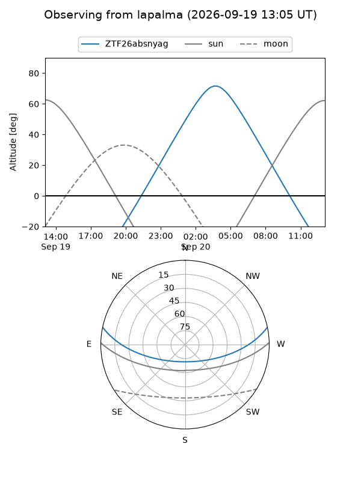
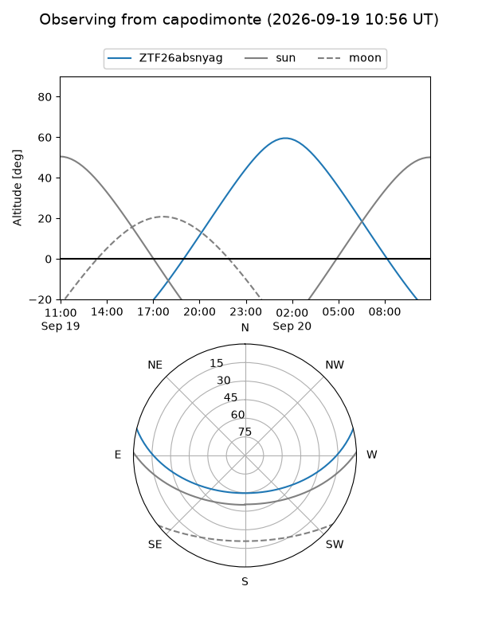

ZTF26absnyag
Target ZTF26absnyag at 2026-09-19 16:40
Aliases and brokers:
FINK-ZTF: ztf.fink-portal.org/ZTF26absnyag
Lasair-ZTF: lasair-ztf.lsst.ac.uk/objects/ZTF26absnyag
ALeRCE-ZTF: alerce.online/object/ZTF26absnyag
Direct TNS query: direct search
alt names
ZTF26absnyag (ztf,fink_ztf)
Coordinates:
equatorial (ra, dec) = 36.3185,+10.30585
equatorial (HMS+DMS) = 02:25:16.45,+10:18:21.04
galactic (l, b) = (157.3906,-46.19316)
Flags:
peak dt: +8.1
Photometry:
last atlaso=nan, ztfr=20.66
1 atlaso, 3 ztfr detections
Lightcurve

Visibility



Additional plots